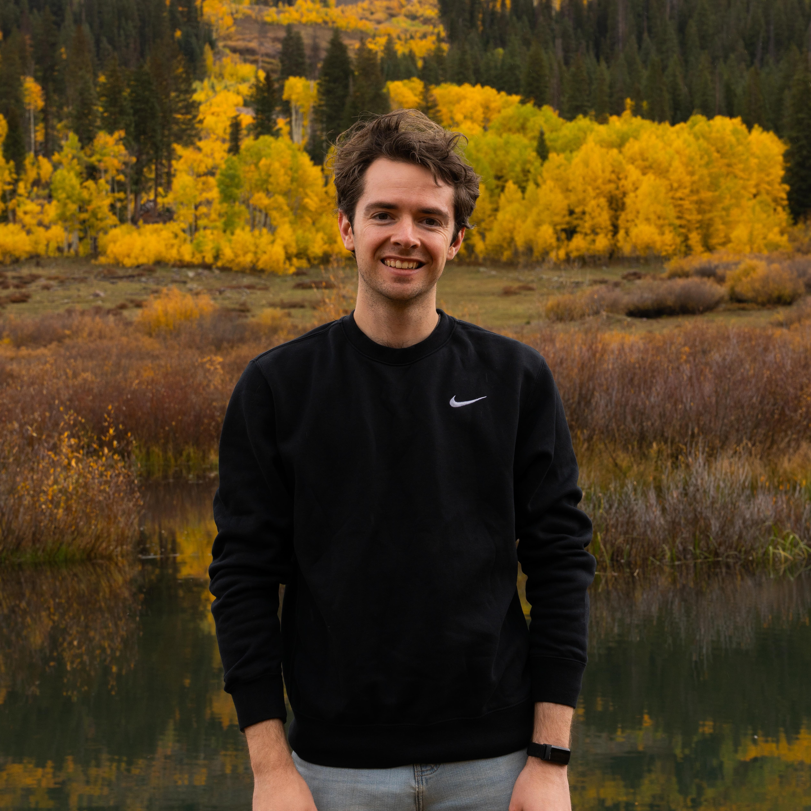
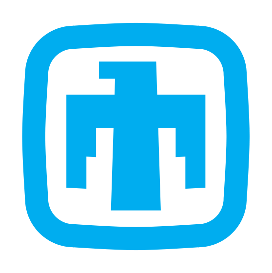

Nolan Bonnie
CS Ph.D. Student | CU Boulder

I received my bachelor's degree in mathematics with a specialization in data science from the University of California, Irvine, where I first developed a passion for data-driven research. As an undergraduate, I had the opportunity to contribute to several research projects spanning topics from atmospheric science, to computer vision. Before starting my Ph.D., I was a member of the technical staff at Sandia National Laboratories, where I developed novel AI planning and cybersecurity techniques for national security applications. You can read more about my work at Sandia here.
I am also associated with the Interdisciplinary Quantitative Biology Program at CU Boulder, a unique program designed to train scientists to bridge traditional research disciplines and work effectively in interdisciplinary teams.
In my spare time, you can find me outside running, climbing, or capturing moments through photography. I especially love getting out on my mountain bike. I am a certified NICA coach, helping high-school students develop skills for safe and efficient mountain biking. I also enjoy teaching them about trail etiquette, wilderness first-aid, and mechanical repairs.
University of Colorado Boulder
Graduate Research Assistant
I explore collective intelligence in biological networks through a computational and bio-physics lens. My work utilizes computer vision, deep neural networks, and mathematical modeling to understand information flow in swarm intelligence systems. Active projects include developing automated software pipelines for 3D spatiotemporal reconstructions of firefly swarms, quantifying multi-agent synchrony, and modeling communication as excitable media.
My thesis centers on three main concepts:
1) Individual Contributions to Collective Behavior: How do individual agent interactions and underlying network topologies drive emergent properties? I analyze large-scale swarm data to understand how localized interactions create coordinated behavior across a network.
2) Spatiotemporal Information Transfer: How do spatial dynamics enhance communication? By applying various machine learning techniques, I investigate how movement patterns paired with binary-like signals encode complex information.
3) Quantification of Emergent Coupling: How do we measure macroscopic coordination in the wild? Using a custom cloud-based citizen science platform, I analyze the world's largest 3D reconstruction dataset of firefly swarms. By developing improved synchrony quantification methods, I can mathematically isolate and measure emergent coupling, revealing a surprisingly high number of synchronous species and uncovering intentionally coupled inhibitory flashing behaviors.

Sandia National Laboratories
R&D S&E Cybersecurity
At Sandia National Laboratories, I developed innovative AI and ML solutions for complex cybersecurity emulation challenges.
I held the role of R&D S&E - Cybersecurity as a member of the technical staff, where I had the privilege of collaborating with incredibly talented scientists and engineers. My projects included designing a novel AI planning agent for dynamic graph traversal problems, creating scalable big data analytics solutions for over 6 petabytes of network traffic data, and advancing threat detection methodologies.
My AI planning contributions in project ATHENA won the prestigious R&D 100 Award in 2022. This work also led to multiple patents, which are currently filed and under review.
Ever since I first ventured outside of the United States, I was in love with traveling. I really enjoy getting to see how other cultures and communities work.
Every time I come across a place I'd like to visit, I add it to my Google Maps list, which is embedded below. I tend to pin specific places like a good hiking trail, a national park, or a scenic view. I hope that you find inspiration from my travel list!